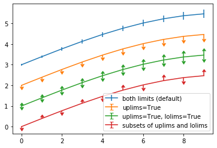

import numpy as np
a = np.arange(15).reshape(3, 5)
aarray([[ 0, 1, 2, 3, 4],
[ 5, 6, 7, 8, 9],
[10, 11, 12, 13, 14]])import numpy as np
a = np.arange(15).reshape(3, 5)
aarray([[ 0, 1, 2, 3, 4],
[ 5, 6, 7, 8, 9],
[10, 11, 12, 13, 14]])import matplotlib.pyplot as plt
fig = plt.figure()
x = np.arange(10)
y = 2.5 * np.sin(x / 20 * np.pi)
yerr = np.linspace(0.05, 0.2, 10)
plt.errorbar(x, y + 3, yerr=yerr, label='both limits (default)')
plt.errorbar(x, y + 2, yerr=yerr, uplims=True, label='uplims=True')
plt.errorbar(x, y + 1, yerr=yerr, uplims=True, lolims=True,
label='uplims=True, lolims=True')
upperlimits = [True, False] * 5
lowerlimits = [False, True] * 5
plt.errorbar(x, y, yerr=yerr, uplims=upperlimits, lolims=lowerlimits,
label='subsets of uplims and lolims')
plt.legend(loc='lower right')
plt.show(fig)